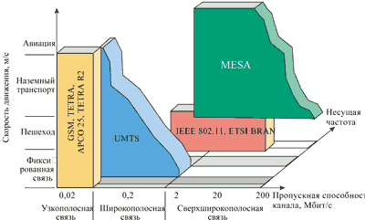
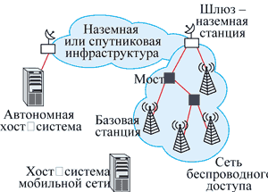
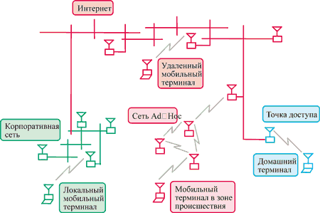

Стефен Ринг,
председатель руководящего комитета проекта MESA, директор отделения Spectrum
& Standards Strategic Planning компании Motorola
http://www.projectmesa.org
Проект MESA (Mobility for Emergency and Safety Applications) был организован двумя ведущими мировыми организациями по стандартизации в сфере телекоммуникаций, ETSI и TIA, в ответ на растущую потребность в стандарте беспроводной технологии (или технологий), которая обеспечивала бы пропускную способность канала существенно больше 2 Mбит/с. Очевидно, что подобная система связи необходима в первую очередь при проведении миротворческих операций, ликвидации последствий катастроф и организации работ при чрезвычайных ситуациях. Поэтому данный проект ориентирован прежде всего на такие социальные институты, как службы общественной безопасности и поддержания правопорядка, неотложной и медицинской помощи. К участию в нем привлечен также ряд государственных организаций из США и Европы, отвечающих за общественный правопорядок и безопасность (полиция, пожарные службы, службы спасения).
Не секрет, что в настоящее время в разных странах системы и решения, используемые для профессиональной подвижной связи, практически везде принципиально различны. Более того, часто они различаются в регионах одной страны, районах одного города и даже в разных общественных службах одной местности. Проект MESA изначально задумывался так, чтобы создаваемая мобильная широкополосная платформа имела стандартизованные технические характеристики, отвечающие запросам мирового рынка систем профессиональной мобильной связи и требованиям любого из существующих секторов общественных служб безопасности.
Немного истории
Как известно, сегодня существует два открытых стандарта цифровой профессиональной мобильной связи - TETRA и APCO 25. Первый появился в результате тесного сотрудничества производителей, операторов связи, специалистов и пользователей под эгидой Европейского института стандартов по телекоммуникациям (European Telecommunications Standards Institute, ETSI). Второй был разработан международной Ассоциацией руководителей средств связи общественных служб безопасности (Association of Public safety Communication Officials, APCO) и органом стандартизации США, объединяющим производителей средств связи, - TIA (Telecommunications Industry Association). TETRA базируется на технологии TDMA (Time Division Multiple Access), APCO 25 - на FDMA (Frequency Division Multiple Access).
Некоторые исследования в русле проекта MESA проводились при разработке спецификаций второй фазы стандарта APCO 25, но главным образом инициативы исходили от рабочей группы ETSI по стандарту TETRA.
Стандарт цифровой подвижной связи TETRA состоит из двух частей: стандарта транкинговой связи, получившего название TETRA V+D (Voice + Data), и спецификаций TETRA PDO (Packet Data Optimized), оптимизированных для передачи пакетов данных. Разработки, начало которых датируется 1989 г., начались с TETRA V+D. Однако вскоре стало очевидно, что для поддержки коммутации пакетов, особенно для быстро развивающихся сетей на базе TCP/IP, необходима специальная архитектура протоколов. И тогда была создана вторая часть - TETRA PDO, ориентированная на пакетную передачу. Эта технология использует ту же радиочастотную платформу, что и TETRA V+D (физический уровень модели ISO), а потому позволяет достичь в сети TETRA PDO скоростей передачи данных в канале (после кодирования) до 19,2 Кбит/с. А применение модуляции \греч.\ пи /4 DQPSK в канале шириной 25 КГц обеспечило общую скорость передачи 36 Кбит/с.
В сети TETRA V+D используется четырехслотовая структура временного разделения канала TDMA, поддерживающая передачу четырех отдельных голосовых каналов на одной узкополосной несущей. Для передачи пакетов с общей скоростью 36 Кбит/с TETRA PDO использует всю пропускную способность канала.
Еще два года назад казалось, что такой производительности будет достаточно для большинства приложений, используемых в профессиональной радиосвязи, особенно по мере разработки новых, более мощных алгоритмов сжатия данных. Однако вскоре стало ясно, что для нормальной работы с современными базами данных и приложениями требуются скорости по крайней мере раз в десять выше.
Тогда начались работы над второй версией стандарта - TETRA R2, главной целью которых стало совершенствование пакетной передачи данных в TETRA-системе. Сегодня уже созданы некоторые спецификации, в частности, TETRA Advanced Packet Data и TETRA Enhanced Data Services, но для этих служб значения скорости передачи в 2 Мбит/с и более недостижимы.
Что же касается проводных сетей, то их производительность уже достигает величин порядка терабитов в секунду, а разрабатываемые приложения все чаще рассчитаны именно на подобные скорости. Поэтому мир профессиональной мобильной связи был поставлен перед необходимостью создания новых базовых технологий и решений, способных поддерживать "прожорливые" профессиональные сервисы, ориентированные на широкополосную связь.
В институте ETSI разработка, предусматривающая реализацию подобных возможностей, получила название DAWS (Digital Advanced Wireless Services) и изначально осуществлялась в рамках проекта TETRA при участии специалистов таких известных на рынке подвижной связи компаний, как Motorola, Simoco, British Telecommunications, TeleDanmark, UK Home Office.
Предварительные положения технологии DAWS основывались на спецификациях семейства стандартов ETSI - ETS 300 393. DAWS первоначально позиционировалась как технология, которая обеспечит предоставление услуг связи при скоростях выше верхней границы, определенной для сетей UMTS (2 Мбит/c), и ниже скорости, характерной для сетей ATM (155 Мбит/c). В качестве дополнения к DAWS рассматривалась технология сверхширокополосной связи BRAN (Broadband Radio Access Network), спецификации для которой, HiperAccess и HiperLink, были разработаны и стандартизованы как составные части стандарта TETRA. Многоуровневая архитектура сетей на базе технологии DAWS полностью соответствовала стандарту ETS 300 393, поддерживая работу с приложениями, ориентированными на коммутацию пакетов. В то же время она обеспечивала абсолютную совместимость не только с сетями широкополосной связи, но и с радиосистемами профессиональной подвижной связи, которые используются службами общественной безопасности.
В 1999 г. на конференции CEPT были продемонстрированы возможности этой технологии в области передачи видеопотоков и работа оборудования беспроводной связи с большими объемами Интернет-данных. Конечно, это были всего лишь первые модели устройств, однако они дали специалистам возможность оценить достоинства DAWS. Были сделаны также предварительные оценки распределения спектра для групп оперативной связи на базе DAWS, применительно к странам Европы и США.
Вскоре после этого было принято решение о более углубленных разработках в области широкополосной мобильной связи с привлечением не только европейских, но и американских специалистов, и в мае 2000 г. в Вашингтоне было подписано соглашение о создании PSPP (Public Safety Partnership Project), который в феврале 2001 г. был преобразован в проект MESA. Так DAWS переросла в самостоятельный трансатлантический проект партнерства в области общественной безопасности, осуществлять который взялись совместно ETSI и TIA.
Почему MESA?
Название проекта - "Мобильная широкополосная связь для служб общественной безопасности и спасения" отражает ключевую ориентацию технологических решений. И дело не только в том, что проект отчасти финансируется соответствующими службами разных стран мира. Пожалуй, более важным мотивом создания новой технологии мобильной широкополосной связи для подобных служб стал постоянно увеличивающийся разрыв между возможностями телекоммуникационных технологий, применяемых в службах защиты мирного населения, и технологий, используемых террористами и криминальными структурами. Другая причина - рост потребности в стандартизованных мобильных широкополосных системах связи в таких областях деятельности, как телемедицина, пожарные службы, мобильная робототехника и организация миротворческих операций.
Борьба с организованной преступностью и терроризмом, аварийно-спасательные работы в нейтральных водах и другая деятельность того же рода требует кооперации и координации различных общественных служб не только внутри одной страны, но и между разными странами. А для этого необходимы глобальные технические решения в международном масштабе. Только так можно обеспечить техническую поддержку указанных служб, защиту информации и ее целостность, не теряя столь важного качества, как оперативность.
Именно поэтому проект реализуется в форме международного партнерства, а его основной задачей стало создание комплекса стандартов, глобально утверждаемых для глобально применимых решений. MESA - это первый пример международного сотрудничества, объединяющего усилия производителей оборудования, пользователей и организаций-пользователей, чтобы выработать требования к беспроводным широкополосным технологиям и системам, отвечающим нуждам этих потребителей.
Области применения
Важный аспект в кризисных ситуациях и при катастрофах - это эффективность первой медицинской помощи пострадавшим. Своевременное и правильное лечение пациентов в первые минуты и часы после случившегося чрезвычайно важно. А чтобы предпринять активные меры на месте происшествия, необходима надежная мобильная беспроводная связь с каналами очень высокой производительности.
Применение подобных систем связи при оказании первой помощи позволяет проводить удаленный мониторинг таких медицинских показателей, как кровяное давление, сердечная активность, энцефалографические данные и температура тела. Двусторонняя голосовая и видеосвязь, помимо передаваемых объективных данных о пациенте, позволяет команде спасателей дистанционно получать квалифицированные медицинские консультации. Понятно, что к этому классу служб относится также множество приложений военного назначения.
Другая область интересов данного проекта, мобильная робототехника, - предмет пристального изучения как военных, так и гражданских служб. Роботы, оснащенные средствами мобильной связи, могут использоваться для эвакуации людей из опасных зон, автоматического контроля обстановки в недоступных для человека зонах, при антитеррористических акциях и боевых действиях в условиях города, для разминирования и т. п. Беспроводная технология, применяемая в таких условиях, по понятным причинам должна быть очень надежна и разработана с учетом возможного перехвата и преднамеренных помех.
На начальных стадиях работы по проекту MESA был определен целый класс принципиально новых служб и приложений. Наиболее обширный из них ориентирован на пожарные службы. Например, предусмотрены приложения, рассчитанные на один из самых сложных и опасных сценариев работы пожарников: пожар на большой высоте. Одежда "пожарных MESA" будет снабжена целым набором детекторов, которые будут фиксировать значения важных параметров окружающей среды (видеоконтроль в обычном и инфракрасном свете) и состояния пожарника (дыхание, сердечный ритм, кровяное давление и температура) в режиме online, давая командиру пожарной команды полную картину происходящего при тушении пожара. В частности, можно будет точно определить местонахождение каждого пожарного (всех трех координат - широты, долготы и высоты). Кроме того, пожарник тоже будет получать аудио- и видеоинформацию, которая поможет ему сориентироваться, например, в помещении, заполненном дымом.
В мобильной беспроводной широкополосной связи нуждаются и многие другие службы общественной безопасности. Вот только несколько примеров ее применения:
- обеспечение безопасности в аэропортах: идентификация подозрительных лиц и быстрое сообщение данных в штаб;
- операции по поддержанию правопорядка и миротворческие операции: дистанционный сбор свидетельских данных;
- общее наблюдение за воздушным пространством: высокоскоростная видео/голосовая и управляющая связь воздух - земля -- воздух;
- защита собственности, например, функция "вызов видеокамеры" с беспроводных мобильных терминалов;
- сбор новостной информации электронными средствами со встроенной функцией речи.
Проблемы, проблемы…
Очевидно, что для поддержки всех этих служб требуется значительная полоса пропускания. Кроме того, оптимальное кодирование и встроенный механизм обеспечения качества сервиса (QoS) должны гарантировать чрезвычайно надежную связь. Технические требования проекта MESA к полосе пропускания дополняют существующие и планируемые стандарты широкополосной беспроводной связи и учитывают такие сегменты, как узкополосная связь, широкополосная связь и сверхширокополосная связь (рис. 1). Главная характеристика этих спецификаций - сочетание мобильности и скорости передачи данных свыше 2 Мбит/с.
|  |
| Рис. 1. Сфера действия и технические особенности систем на базе технологии MESA.
|
Один из ключевых вопросов при реализации широкополосной связи - определение рабочих номиналов частот, для которых использование спектра было бы максимально эффективным.
При этом следует учесть важнейшее требование MESA - обеспечение взаимодействия с будущими системами широкополосной спутниковой связи. Это позволит преодолеть ограничения на размер ячейки, характерные для систем широкополосной радиосвязи, действующих в гигагерцевом диапазоне частот. Ведь ключевые технические требования проекта должны обеспечить сочетание широкополосности с полной мобильностью в большой зоне действия.
Кроме того, взаимодействие с будущими спутниковыми системами даст стабильный канал связи с удаленными районами, в которых наземная инфраструктура может быть выведена из строя в результате природных катастроф, землетрясений, наводнений и т. п. В таких ситуациях будет вполне достаточно развернуть портативные или подвижные базовые станции. Широкополосным спутниковым ретранслятором для создания локальной зоны обслуживания "на острове" или "горячей точки" вокруг места происшествия может быть оснащен, например, автомобиль.
В настоящее время рабочая группа MESA готовит обзор по распределению частот, который будет представлен на Всемирной конференции по радиочастотам, запланированной на лето 2003 г.
Необходимо отметить, что в 2001 г. в Тампере был решен еще один важнейший вопрос - определены требования к спецификациям беспроводной широкополосной технологии обратной связи с удаленными районами и принята "Конвенция по обеспечению помощи при катастрофах".
Особенности структуры
Для соответствия ключевым требованиям проекта предлагается использовать сеть, построенную на основе IP-протокола (рис. 2) с возможностью межсетевого взаимодействия как с сетью Интернет, так и с корпоративными интрасетями (рис. 3). Применяемая в такой сети технология ориентирована на приложения, для которых требуется скорость передачи данных свыше 2 Мбит/с, т. е. выше той, которая должна быть реализована в системах UMTS/IMТ-2000. И хотя первые подобные приложения, скорее всего, будут использовать скорости порядка нескольких десятков Мбит/с, технология MESA способна обеспечить скорость выше 155 Мбит/c при сохранении полной мобильности и широкого географического покрытия, включая зоны роуминга.
|  | Рис. 2. Схема организации сети на базе технологии MESA с помощью IP-компонентов.
|
Кроме того, одно из важнейших требований служб общественной безопасности и военных организаций - реализация специальной сетевой функции, ориентированной на использование при происшествиях или в чрезвычайных ситуациях, которая получила название Ad-Hoc. Принцип действия Ad-Hoc состоит в способности мобильного терминала при отсутствии стационарной или фиксированной инфраструктуры автоматически функционировать в качестве небольшой "базовой станции". Таким образом, локальная система Ad-Hoc (см. рис. 3) может самоконфигурироваться и самовосстанавливаться в случае потери одного или более узлов.
|  |
| Рис. 3. Вариант топологии сети на базе технологии MESA.
|
Предполагается, что такого рода сеть Ad-Hoc может быть создана на базе нескольких не связанных проводными каналами узлов, которые автоматически опознают друг друга, и поддерживающих терминалов, активных в пределах определенной зоны.
Необходимые исследования
Фактор, который в значительной мере повлиял на учреждение проекта MESA как многостороннего партнерского проекта, - это огромный объем необходимых исследований. Бремя выполнения такого количества фундаментальных исследований будет нести не один, а несколько регионов мира.
Заметим, что исследовательские проекты, подобные SAMBA (исследование широкополосной беспроводной связи в рамках 5-й рабочей группы Европейской Комиссии, который частично финансируется фондом исследований Европейского Союза), пока не уделяли особого внимания таким характеристикам подвижной связи, как сочетание мобильности с очень высокой скоростью передачи данных. Поэтому пока MESA может рассчитывать только на собственные силы.
Одно лишь главное требование, а именно сочетание мобильности с очень большой скоростью передачи данных, представляет собой серьезный предмет для исследований, не говоря о тех, которые присущи технологиям связи третьего поколения. Непростых экспериментов требуют и другие составляющие проекта. Например, нужно найти решение для устойчивой синхронизации связи. Проблемы, в частности, возникают в ситуации, когда длительность передачи на несущей радиочастоте одного символа достигает той же величины, что и допплеровский сдвиг, возникающий из-за относительной скорости перемещения передатчика и приемника, или когда нужно определить параметры оборудования, необходимые для коммутации антенн беспроводных инфраструктур Ad-Hoc и "внешних" по отношению к ним мобильных устройств. Перечень исследовательских программ будет представлен техническим комитетом MESA к середине 2002 г.
Более подробную информацию о проекте MESA можно получить на сайте http://www.projectmesa.org.